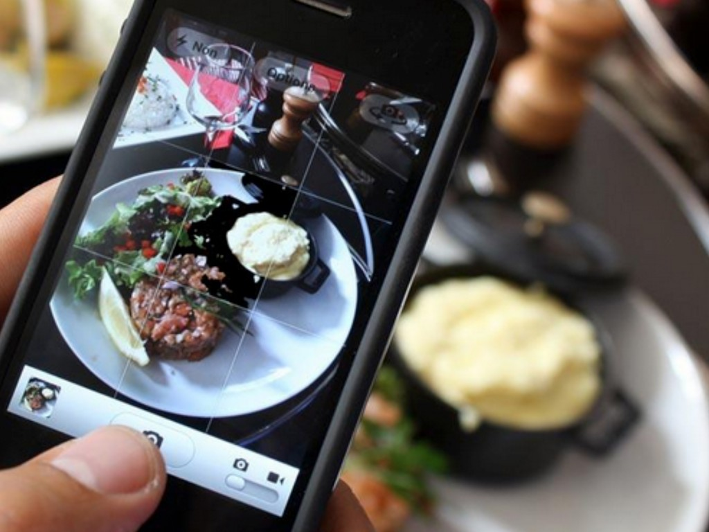

Mixed Berry and Granola Crumbles
It’s a tough life after Christmas. We’ve danced, we’ve celebrated and we’ve eaten like Kings and Queens for the past few weeks. Now… it’s all abut dry January (Yes, I am taking part, for reasons unbeknown to me!) and what body part in the gym we’re working out tonight.
Read More >
As you know, I’m all about moderation and firmly believe that we can be healthy, in great shape and happy without restricting the food we eat to plain, green salads. So, after the festive season is over and we get back to our normal routines where chocolate is no longer stashed in mothers’ cupboard, having the option of a healthy sweet dessert is a huge bonus. It’s fruity, oozing with goodness and completely refined sugar-free.. it’s my mixed berry and granola crumbles! Fantastically simple to make and utterly delicious. The granola topping is crunchy and flavoursome, full of toasted coconutty bites and chewy raisons, that on their own is enough to hit the spot! Then comes the warm, juicy berries which have been softened and further sweetened with honey and cinnamon.
Ingredients
- 450g Mixed fresh berries (Any combination of strawberries, blackberries, blueberries, redcurrants)
- 1 tsp cinnamon
- 1 Tbs honey
- 1 Cup gluten-free oats
- ½ cup unsweetened desiccated coconut
- ¼ cup flaked almonds
- ½ Tbs honey
- 2 Tbs of raisins
- 1tsp of coconut oil to toast granola
Instructions
- Pre-heat the oven to 200°C
- Add all the ingredients for the granola topping, except coconut oil, to a blender and whizz for a few seconds on a high speed.
- Put the blended granola into a frying pan with a tsp of coconut oil and stir continuously on a med-high heat for 3-4 minutes until starting to turn golden brown.
- Place the berries in a pan with the cinnamon and honey on a medium heat for 2 minutes until softened and juices starting to run.
- Divide up the berry mix into two ramekins and top with the granola.
- Bake in the oven for 10 minutes until crumble topping is golden brown and berry juices are bubbling. Serve hot.
Read Less >
Are health bloggers just a fad?

I watched a show last night on BBC called “Clean Eating’s Dirty Secrets‘ where vlogger (video blogger) Grace Victory dived into the subject of healthy food bloggers and asked some pretty compelling questions. LLG is not as well-known as the likes of the lovely Deliciously Ella, but I also follow a slightly different approach to Ella and felt that as a clean eating blogger myself, it was important to address some of Grace’s questions.
Read More >
The most pertinent question being; Do we even know what we’re talking about and are we within our rights to give people advice? Well, I have to say, she did raise some really interesting examples where bloggers have said things about foods that have absolutely no support or evidence. Just because one states they have no official qualifications, is this okay?
My response is this:
At the end of the day, we are constantly showered with new pieces of information and as individuals, we have two choices – to accept it or reject it. All we are doing as health bloggers is simply sharing what we know works best. Should that come with clear messages that it might not be for everyone? Yes, absolutely. But wonderful is the freedom of speech and just as Grace has built her community through sharing her most personal moments, we choose to share something else. Who wants to look at it, and pay attention to it, is down to the eye of the beholder. I believe I’m sharing something beneficial, a message that promotes freedom, happiness and a way to show people that healthy eating doesn’t actually have to be so drastic or hard. Will some disagree with the way I eat? Of course, but I’m simply sharing what I believe.
I think life is about moderation, it’s about balance. Can I imagine going through life never drinking alcohol, never eating meat, cutting carbohydrates and never ever having a birthday cake that was bought from a shop? God, no, but this is my opinion which everyone is entitled to.
Read Less >